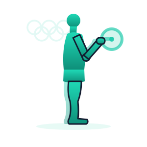

أين تشعر بالشدّ؟
صورة للحظة يعرفها كل من شاهد رفع الأثقال. ثم تجربة على ذراعك أنت.

قبل أن تقرأ سطرًا آخر، جرّب بنفسك: ضع كفّك على مقدّمة عضدك، وارفع ساعدك ببطء ثم أنزله. ثم انقل كفّك إلى خلف عضدك وأعِد الحركة نفسها.
أين شعرتَ بالشدّ حين رفعتَ ساعدك؟
كم عضلة تظنّ أنها عملت لترفع ساعدك ثم تُنزله؟
هل يستطيع الخيط أن يدفع؟
أمامك كتلة معجون لاصق مربوطة بطرف خيط. جرّب أن تحرّكها بالخيط.
في المختبر الحقيقي يحتاج هذا النشاط قطعة معجون لاصق وخيطًا يُثبَّت في طرفها لا أكثر. هنا ستفعل الشيء نفسه على الشاشة.
لو دفعتَ المقبض نحو المعجون بدل أن تسحبه، ما الذي تتوقّع حدوثه؟
اسحب المقبض بعيدًا عن المعجون، ثم ادفعه نحوه. جرّب الفعلين.
جرّبتَ 0 من 2
وإن كنت تستعمل لوحة المفاتيح: انقر على الرسم ثم استعمل السهم الأيمن للسحب والسهم الأيسر للدفع.
ما الذي منع المعجون من التحرّك حين دفعتَ المقبض؟
عظمٌ في جسمك عليه عضلة واحدة فقط، والعضلة تعمل كما يعمل هذا الخيط. إلى أين يستطيع هذا العظم أن يذهب، وإلى أين لا يستطيع؟
يقتصر عمل العضلات على السحب، ولا يمكنها الدفع.
ذراع بعضلة واحدة
عضد وساعد يلتقيان عند المرفق، وعليهما عضلة واحدة. اسحبها وانظر ماذا يحدث.
في بداية الدرس وضعتَ كفّك على عضدك وسألناك أين تشعر بالشدّ حين ترفع ساعدك. أمامك الآن المكان نفسه مرسومًا من الداخل.
اسحب المقبض على العضلة الأمامية نحو الكتف.
وإن كنت تستعمل لوحة المفاتيح: انقل التركيز إلى المقبض ثم اضغط مسافة أو Enter لسحبه.
الساعد مرفوع الآن، ودفعُ العضلة لا يفعل شيئًا. فما الذي يلزم لإنزاله؟
العضلة أمام عضدك اسمها العضلة ذات الرأسين، والتي خلفه اسمها العضلة ثلاثية الرؤوس.
انظر إلى العضلة ذات الرأسين في الوضعين. ما الذي حدث لها لحظة رفعت الساعد؟
حين تقصُر العضلة نقول إنها تنقبض، وحين تستطيل نقول إنها تنبسط.
أعِد الساعد إلى الأعلى بعينك، وصنّف حال كلّ عضلة في تلك اللحظة.
والآن أنزِل الساعد بعينك. ما حال العضلتين في هذه اللحظة؟
عضلتان تعملان على العظم نفسه، كلٌّ منهما تسحبه في اتجاه معاكس للأخرى: هاتان هما العضلات المتضادة.
والعضلة المنبسطة ليست عضلة معطَّلة. هي تستطيل لأنّ شريكتها تسحب العظم فتشدّها معه — فلكلّ منهما دور في كل حركة.
في بداية الدرس سألناك كم عضلة عملت لترفع ساعدك ثم تُنزله. ما الجواب الآن بعد ما رأيته؟
أين الأزواج الأخرى؟
ما رأيته في الذراع ليس خاصًّا بها. ابحث عنه في بقيّة جسدك.
قبل أن تنقر شيئًا: أيّ هذه الأجزاء تظنّ أنه يحتاج أكثر من عضلة واحدة ليتحرّك؟
من الأمام
من الخلف
انقر كلّ منطقة مضيئة وانظر إلى اتجاهَي حركتها.
استكشفتَ 0 من 5
لكلّ منطقة من هذه المناطق زوج عضلات متضادة له اسمان. ضع كلّ زوج في موضعه.
خمس مناطق مختلفة من جسمك، وفيها كلّها زوج لا عضلة واحدة. ما القاعدة التي تجمعها؟
حين تتمزّق عضلة
رافع أثقال حمّل ذراعه وزنًا زائدًا، فتمزّقت عضلته ثلاثية الرؤوس.
قبل أن ترى شيئًا: أيّ حركة تتوقّع أن يفقدها؟
اسحب كلّ مقبض بدوره، وانظر أيّهما ما زال يعمل.
هذا الرافع يشكو ضعفًا في اتجاه واحد لا في الاتجاهين. لماذا؟
العضلة ذات الرأسين عنده سليمة تمامًا. اشرح لماذا لا تستطيع أن تعوّض عن شريكتها الممزّقة.
يمكنك صنع نموذج للذراع من قطعتَي كرتون يصلهما مشبك فراشة عند المرفق، وشريطين مطّاطيين يمثّلان العضلتين: أحدهما أمام المشبك والآخر خلفه.
هذا النموذج يشبه ذراعك في أشياء ويخدعك في أشياء. أيّ العبارات الآتية هي وجه الاختلاف الحقيقي بينه وبين ذراعك؟
التقييم الختامي
عشرة أسئلة، ومحاولة واحدة لكلّ سؤال. وفي نهايتها شهادتك باسمك.
هذا هو التقييم الختامي لهذا الدرس. لكلّ سؤال محاولة واحدة، وبعد آخر سؤال تظهر نتيجتك وشهادتك. خذ وقتك.
1 اذكر زوج عضلات متضادة في الذراع.
2 اذكر زوج عضلات متضادة في الصدر.
3 اذكر زوج عضلات متضادة في الفخذ.
4 لماذا تنتظم العضلات المتضادة في أزواج؟
5 عند ثني المرفق ورفع الساعد إلى أعلى، ما حال العضلة ثلاثية الرؤوس؟
6 ماذا يحدث للعضلة حين تنبسط؟
7 لاعب كرة قدم يثني ركبته ثم يمدّها ليركل الكرة. أيّ وصف يطابق ما تعلّمته؟
8 تحسّستَ عضد صديقك وهو يرفع ساعده، فوجدتَ مقدّمة عضده صلبة منتفخة وخلفه رخوًا. ما تفسير ذلك؟
9 ما اللفظ الذي نصف به العضلة حين تقصُر؟
10 اكتب في جملة واحدة: لماذا لا تكفي عضلة واحدة لتحريك عظم في اتجاهين؟